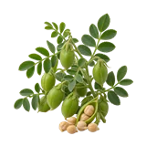

होम / चना

चना का भाव आज | Gram Mandi Price Today
चना का भाव आज जानना किसानों और व्यापारियों के लिए ज़रूरी है। इस पेज पर इंदौर, उज्जैन और कोटा जैसी उपलब्ध मंडियों में चना के न्यूनतम, मॉडल और अधिकतम भाव प्रति क्विंटल में देखें। गुणवत्ता, आवक और नज़दीकी मंडियों की तुलना से बेहतर फैसला लिया जा सकता है।
Check available Gram mandi prices before you sell. Compare minimum, modal and maximum rates with quality, arrivals and nearby market records.
चना का भाव कैसे देखें और रेट किन बातों से बदलता है
चना का भाव दाल बाजार, मंडी में उपलब्ध किस्म और माल की गुणवत्ता से बदलता है। देसी और काबुली जैसे अलग grade को एक ही भाव से नहीं मिलाना चाहिए।
आज का चना भाव कैसे देखें
इस पेज की मंडी-वार तालिका में न्यूनतम, मॉडल और अधिकतम भाव देखें। अपनी नज़दीकी मंडी तथा उपलब्ध दूसरी मंडियों के भाव की तुलना करके फैसला लेना अधिक उपयोगी रहता है।
- अपनी मंडी या राज्य चुनकर भाव देखें।
- न्यूनतम, मॉडल और अधिकतम भाव में अंतर समझें।
- पुराने और नए उपलब्ध रिकॉर्ड में फर्क देखकर निर्णय लें।
गुणवत्ता और ग्रेड का असर
दाने का आकार, रंग, सफाई, टूटे दाने और नमी चने के lot की कीमत बदल सकते हैं। खरीददार किस्म और गुणवत्ता देखकर बोली लगाते हैं।
आवक, मांग और बाजार
नई रबी आवक, दाल मिलों की मांग और स्थानीय व्यापार चने के भाव में उतार-चढ़ाव ला सकते हैं। MSP को सरकारी खरीद के संदर्भ में समझें, खुली मंडी की गारंटी के रूप में नहीं।
चना बेचने या खरीदने से पहले ध्यान रखें
- देसी और काबुली चने के भाव अलग-अलग तुलना करें।
- बिक्री से पहले दाने की सफाई और नमी पर ध्यान दें।
- एक ही भाव के बजाय 2–3 मंडियों का मॉडल भाव देखें।